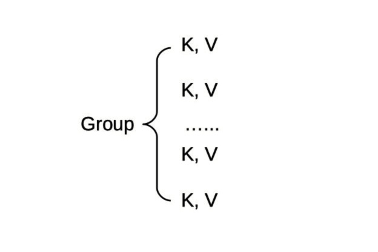

- 00 开篇词 微服务，从放弃到入门.md.html
- 01 到底什么是微服务？.md.html
- 02 从单体应用走向服务化.md.html
- 03 初探微服务架构.md.html
- 04 如何发布和引用服务？.md.html
- 05 如何注册和发现服务？.md.html
- 06 如何实现RPC远程服务调用？.md.html
- 07 如何监控微服务调用？.md.html
- 08 如何追踪微服务调用？.md.html
- 09 微服务治理的手段有哪些？.md.html
- 10 Dubbo框架里的微服务组件.md.html
- 11 服务发布和引用的实践.md.html
- 12 如何将注册中心落地？.md.html
- 13 开源服务注册中心如何选型？.md.html
- 14 开源RPC框架如何选型？.md.html
- 15 如何搭建一个可靠的监控系统？.md.html
- 16 如何搭建一套适合你的服务追踪系统？.md.html
- 17 如何识别服务节点是否存活？.md.html
- 18 如何使用负载均衡算法？.md.html
- 19 如何使用服务路由？.md.html
- 20 服务端出现故障时该如何应对？.md.html
- 21 服务调用失败时有哪些处理手段？.md.html
- 22 如何管理服务配置？.md.html
- 23 如何搭建微服务治理平台？.md.html
- 24 微服务架构该如何落地？.md.html
- 25 微服务为什么要容器化？.md.html
- 26 微服务容器化运维：镜像仓库和资源调度.md.html
- 27 微服务容器化运维：容器调度和服务编排.md.html
- 28 微服务容器化运维：微博容器运维平台DCP.md.html
- 29 微服务如何实现DevOps？.md.html
- 30 如何做好微服务容量规划？.md.html
- 31 微服务多机房部署实践.md.html
- 32 微服务混合云部署实践.md.html
- 33 下一代微服务架构Service Mesh.md.html
- 34 Istio：Service Mesh的代表产品.md.html
- 35 微博Service Mesh实践之路（上）.md.html
- 36 微博Service Mesh实践之路（下）.md.html
- 微博技术解密（上） 微博信息流是如何实现的？.md.html
- 微博技术解密（下）微博存储的那些事儿.md.html
- 结束语 微服务，从入门到精通.md.html
- 阿忠伯的特别放送 答疑解惑01.md.html
- 阿忠伯的特别放送 答疑解惑02.md.html
- 捐赠
22 如何管理服务配置？
在拆分为微服务架构前，曾经的单体应用只需要管理一套配置；而拆分为微服务后，每一个系统都有自己的配置，并且都各不相同，而且因为服务治理的需要，有些配置还需要能够动态改变，以达到动态降级、切流量、扩缩容等目的，这也是今天我要与你探讨的，在微服务架构下服务配置如何管理的问题。
本地配置
服务配置管理最简单的方案就是把配置当作代码同等看待，随着应用程序代码一起发布。比如下面这段代码用到了开源熔断框架Hystrix，并且在代码里定义了几个配置，一个是线程的超时时间是3000ms，一个是熔断器触发的错误比率是60%。
@HystrixCommand(fallbackMethod = "getDefaultProductInventoryByCode",
commandProperties = {
@HystrixProperty(name = "execution.isolation.thread.timeoutInMilliseconds", value = "3000"),
@HystrixProperty(name = "circuitBreaker.errorThresholdPercentage", value="60")
}
)
public Optional<ProductInventoryResponse> getProductInventoryByCode(String productCode)
{
....
}
还有一种方案就是把配置都抽离到单独的配置文件当中，使配置与代码分离，比如下面这段代码。
@HystrixCommand(commandKey = "inventory-by-productcode", fallbackMethod = "getDefaultProductInventoryByCode")
public Optional<ProductInventoryResponse> getProductInventoryByCode(String productCode)
{
...
}
相应的配置可以抽离到配置文件中，配置文件的内容如下：
hystrix.command.inventory-by-productcode.execution.isolation.thread.timeoutInMilliseconds=2000
hystrix.command.inventory-by-productcode.circuitBreaker.errorThresholdPercentage=60
无论是把配置定义在代码里，还是把配置从代码中抽离出来，都相当于把配置存在了应用程序的本地。这样做的话，如果需要修改配置，就需要重新走一遍代码或者配置的发布流程，在实际的线上业务当中，这是一个很重的操作，往往相当于一次上线发布过程，甚至更繁琐，需要更谨慎。
这时你自然会想，如果能有一个集中管理配置的地方，如果需要修改配置，只需要在这个地方修改一下，线上服务就自动从这个地方同步过去，不需要走代码或者配置的发布流程，不就简单多了吗？没错，这就是下面要讲的配置中心。
配置中心
配置中心的思路就是把服务的各种配置，如代码里配置的各种参数、服务降级的开关甚至依赖的资源等都在一个地方统一进行管理。服务启动时，可以自动从配置中心中拉取所需的配置，并且如果有配置变更的情况，同样可以自动从配置中心拉取最新的配置信息，服务无须重新发布。
具体来讲，配置中心一般包含下面几个功能：
配置注册功能
配置反注册功能
配置查看功能
配置变更订阅功能
接下来我来给你详细讲解下配置中心的功能是如何实现的。
1. 配置存储结构
如下图所示，一般来讲，配置中心存储配置是按照Group来存储的，同一类配置放在一个Group下，以K, V键值对存储。

2. 配置注册
配置中心对外提供接口/config/service?action=register来完成配置注册功能，需要传递的参数包括配置对应的分组Group，以及对应的Key、Value值。比如调用下面接口请求就会向配置项global.property中添加Key为reload.locations、Value为/data1/confs/system/reload.properties的配置。
curl "http://ip:port/config/service?action=register" -d "group=global.property&key=reload.locations&value=/data1/confs/system/reload.properties"
3. 配置反注册
配置中心对外提供接口config/service?action=unregister来完成配置反注册功能，需要传递的参数包括配置对象的分组Group，以及对应的Key。比如调用下面的接口请求就会从配置项global.property中把Key为reload.locations的配置删除。
curl "http://ip:port/config/service?action=unregister"-d "group=global.property&key=reload.locations"
4. 配置查看
配置中心对外提供接口config/service?action=lookup来完成配置查看功能，需要传递的参数包括配置对象的分组Group，以及对应的Key。比如调用下面的接口请求就会返回配置项global.property中Key为reload.locations的配置值。
curl "http://ip:port/config/service?action=lookup&group=global.property&key=reload.locations"
5. 配置变更订阅
配置中心对外提供接口config/service?action=getSign来完成配置变更订阅接口，客户端本地会保存一个配置对象的分组Group的sign值，同时每隔一段时间去配置中心拉取该Group的sign值，与本地保存的sign值做对比。一旦配置中心中的sign值与本地的sign值不同，客户端就会从配置中心拉取最新的配置信息。比如调用下面的接口请求就会返回配置项global.property中Key为reload.locations的配置值。
curl "http://ip:port/config/service？action=getSign&group=global.property"
讲到这里，你应该对配置中心的作用有所了解了，它可以便于我们管理服务的配置信息，并且如果要修改配置信息的话，只需要同配置中心交互就可以了，应用程序会通过订阅配置中心的配置，自动完成配置更新。那么实际业务中，有哪些场景应用配置中心比较合适呢？下面我就结合自己的经验，列举几个配置中心的典型应用场景，希望能给你一些启发。
资源服务化。对于大部分互联网业务来说，在应用规模不大的时候，所依赖的资源如Memcached缓存或者MCQ消息队列的数量也不多，因此对应的资源的IP可以直接写在配置里。但是当业务规模发展到一定程度后，所依赖的这些资源的数量也开始急剧膨胀。以微博的业务为例，核心缓存Memcached就有上千台机器，经常会遇到个别机器因为硬件故障而不可用，这个时候如果采用的是本地配置的话，就需要去更改本地配置，把不可用的IP改成可用的IP，然后发布新的配置，这样的过程十分不便。但如果采用资源服务化的话，把对应的缓存统统归结为一类配置，然后如果有个别机器不可用的话，只需要在配置中心把对应的IP换成可用的IP即可，应用程序会自动同步到本机，也无须发布。
业务动态降级。微服务架构下，拆分的服务越多，出现故障的概率就越大，因此需要有对应的服务治理手段，比如要具备动态降级能力，在依赖的服务出现故障的情况下，可以快速降级对这个服务的调用，从而保证不受影响。为此，服务消费者可以通过订阅依赖服务是否降级的配置，当依赖服务出现故障的时候，通过向配置中心下达指令，修改服务的配置为降级状态，这样服务消费者就可以订阅到配置的变更，从而降级对该服务的调用。
分组流量切换。前面我提到过，为了保证异地多活以及本地机房调用，一般服务提供者的部署会按照IDC维度进行部署，每个IDC划分为一个分组，这样的话，如果一个IDC出现故障，可以把故障IDC机房的调用切换到其他正常IDC。为此，服务消费者可以通过订阅依赖服务的分组配置，当依赖服务的分组配置发生变更时，服务消费者就对应的把调用切换到新的分组，从而实现分组流量切换。
开源配置中心与选型
讲到这里，你可以根据我前面对配置中心的讲解自己去实现一个配置中心，但其实对于大部分中小团队来说，目前业界已经开源的配置中心实现可以说功能已经十分完善了，并且经过很多公司实际线上业务的充分论证，能满足大多数业务的需求，所以我建议是尽量选择成熟的开源配置中心实现，那么有哪些开源的配置中心可以使用呢？下面我就简单介绍下三个典型的开源实现：
Spring Cloud Config。Spring Cloud中使用的配置中心组件，只支持Java语言，配置存储在git中，变更配置也需要通过git操作，如果配置中心有配置变更，需要手动刷新。
Disconf。百度开源的分布式配置管理平台，只支持Java语言，基于Zookeeper来实现配置变更实时推送给订阅的客户端，并且可以通过统一的管理界面来修改配置中心的配置。
Apollo。携程开源的分布式配置中心，支持Java和.Net语言，客户端和配置中心通过HTTP长连接实现实时推送，并且有统一的管理界面来实现配置管理。
在实际选择的时候，Spring Cloud Config作为配置中心的功能比较弱，只能通过git命令操作，而且变更配置的话还需要手动刷新，如果不是采用Spring Cloud框架的话不建议选择。而Disconf和Apollo的功能都比较强大，在国内许多互联网公司内部都有大量应用，其中Apollo对Spring Boot的支持比较好，如果应用本身采用的是Spring Boot开发的话，集成Apollo会更容易一些。
总结
今天我给你讲解了微服务架构下如何使用配置中心对服务的配置进行管理，以及实际业务中可能用到的场景，最后给出了一些开源配置中心的解决方案。关于业务中是否需要用到配置中心，以及选择哪种配置中心，要根据实际情况而定，如果业务比较简单，配置比较少并且不经常变更的话，采用本地配置是最简单的方案，这样的话不需要额外引入配置中心组件；相反，如果业务比较复杂，配置多而且有动态修改配置的需求的话，强烈建议引入配置中心来进行管理，而且最好做到配置变更实时推送给客户端，并且可以通过统一的管理界面来管理配置，这样的话能极大地降低运维的复杂度，减少人为介入，从而提高效率。
思考题
在前面我讲到Zookeeper、Consul、etcd作为服务的注册中心时，可以提供强一致性的服务发现功能，那么它们能够作为配置中心吗？为什么？
欢迎你在留言区写下自己的思考，与我一起讨论。
© 2019 - 2023 Liangliang Lee. Powered by gin and hexo-theme-book.